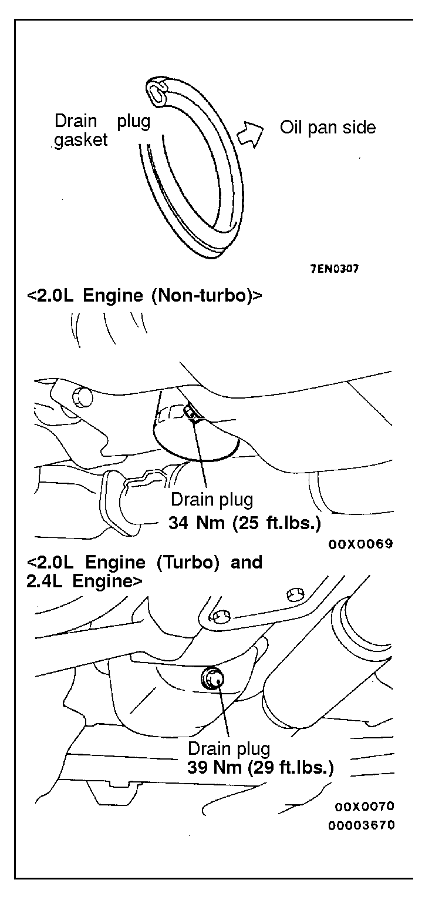

![[Previous]](https://mitsubishitechinfo.com/data/F24S/BUTTONS/fprevg.png)
![[Next]](https://mitsubishitechinfo.com/data/F24S/BUTTONS/fnextg.png)

9.ENGINE OIL (Change)
Use the specified oil. (Refer to  .)
.)
Caution
Never use nondetergent or straight mineral oil.
1.After warming up the engine, remove the oil filler cap.
2.Remove the drain plug to allow the engine oil to drain.
3.Replace the drain plug gasket with a new one and tighten the drain plug.
4.Supply new engine oil through the oil filler.
Engine oil total quantity:
[including oil filter and oil cooler]
<2.0L Engine (Non-turbo) and 2.4L Engine>
4.3 dm3 (4 1/2 qts.)
<2.0L Engine (Turbo)>
4.4 dm3 (4.6 qts.)
5.Start and run the engine a few minutes.
6.Stop the engine and check the engine oil level is within the level range indicated on the oil dipstick.